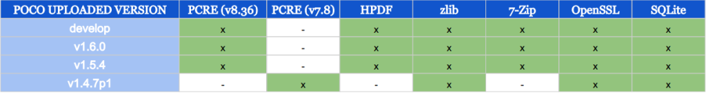

The POCO C++ Libraries are, like their own web recites, “Modern, powerful open source C++ class libraries and frameworks for building network- and internet-based applications that run on desktop, server, mobile and embedded systems“. They were created by Günter Obiltschnig in 2004 and have been extended by enthusiastic C++ developers from all over the world.

Now, you have the following versions available in biicode:
- fenix/poco (develop) -> changing continuously
- fenix/poco (v1.6.0)
- fenix/poco (v1.5.4)
- fenix/poco (v1.4.7p1)
Benefits
biicode is a file based dependency manager, which has many advantages:
- Save time reusing from any POCO C++ library (Foundation, Net, NetSSL_OpenSSL, etc.) such times as you need and avoid to configure and build out the libraries first. biicode’ll only retrieve the necessary files to build your project.
- POCO C++ depends on external libraries like zlib, PCRE (Perl Compatible Regular Expressions), HPDF, 7-Zip, OpenSSL and SQLite that they’re uploaded on biicode and maintained by our users.
- It’s been tested on biicode in Windows with Visual Studio 10 and Visual Studio 12, Linux with GCC and Apple with CLang
Note: if you’re using Windows OS, I recommend you to use Visual Studio to configure your project because with MinGW you could get some errors.
POCO C++ external dependencies
These libraries have many external and third party dependencies to build some of them, e.g., Foundation depends on PCRE and ZLib. Without biicode PCRE and ZLib source files must be present in POCO C++ project, but with biicode it’s not needed. The following table shows all the dependencies for every version uploaded which biicode’ll find if you use all the modules in a project:

So, you’ll not have to worry about to install or build them, biicode does all the effort for you ;) These are the depending blocks in biicode:
- PCRE(v8.36): fenix/pcre
- PCRE(v7.8): fenix/pcre(v7.8)
- HPDF: fenix/hpdf
- zlib: zlib/zlib
- 7-Zip: fenix/7z
- OpenSSL: lasote/openSSL(v1.0.2)
- SQLite: fenix/sqlite
Using POCO C++ Libraries in your project
1. Create a new project and an empty block:
1 2 3 | $ bii init poco_sample $ cd poco_sample $ bii new myuser/myblock |
2. Add your sample code (orignal code from Net/samples/dict.cpp) into ./blocks/myuser/myblock/sample.cpp
1 2 3 4 5 6 7 8 9 10 11 12 13 14 15 16 17 18 19 20 21 22 23 24 25 26 27 28 29 30 31 32 33 34 35 36 37 38 39 40 41 42 43 44 45 46 47 48 49 50 51 52 53 54 55 | // dict.cpp // // $Id: //poco/1.4/Net/samples/dict/src/dict.cpp#1 $ // // This sample demonstrates the StreamSocket and SocketStream classes. // // Copyright (c) 2005-2006, Applied Informatics Software Engineering GmbH. // and Contributors. // // SPDX-License-Identifier: BSL-1.0 #include "fenix/poco/Net/include/Poco/Net/StreamSocket.h" #include "fenix/poco/Net/include/Poco/Net/SocketStream.h" #include "fenix/poco/Net/include/Poco/Net/SocketAddress.h" #include "fenix/poco/Foundation/include/Poco/StreamCopier.h" #include "fenix/poco/Foundation/include/Poco/Path.h" #include "fenix/poco/Foundation/include/Poco/Exception.h" #include <iostream> using Poco::Net::StreamSocket; using Poco::Net::SocketStream; using Poco::Net::SocketAddress; using Poco::StreamCopier; using Poco::Path; using Poco::Exception; int main(int argc, char** argv){ const std::string HOST("dict.org"); const unsigned short PORT = 2628; if (argc != 2){ Path p(argv[0]); std::cout << "usage: " << p.getBaseName() << " <term>" << std::endl; std::cout << " looks up <term> in dict.org and prints the results" << std::endl; return 1; } std::string term(argv[1]); try{ SocketAddress sa(HOST, PORT); StreamSocket sock(sa); SocketStream str(sock); str << "DEFINE ! " << term << "\r\n" << std::flush; str << "QUIT\r\n" << std::flush; sock.shutdownSend(); StreamCopier::copyStream(str, std::cout); } catch (Exception& exc){ std::cerr << exc.displayText() << std::endl; return 1; } return 0; } |
3. Choose which uploaded POCO version you want to depend on, configure it through your ./blocks/myuser/myblock/biicode.conf file. Create it and copy the following:
1 2 | [requirements] fenix/poco(v1.6.0): 0 |
4. Finally, you’d only have to retrieve your POCO dependencies and build your sample.cpp. For it, use this command:
1 | $ bii cpp:build |
Note: for Windows users, to configure your project with Visual Studio, e.g., 10 version, execute:
1 2 | $ bii cpp:configure -G "Visual Studio 10" $ bii cpp:build |
So, biicode’ll download all the dependencies from release version 1.6.0 and compile the project. Now, you can run the binary created in your ./bin/ folder.
Use the original #include‘s
Change all the includes from the previous sample.cpp code to:
1 2 3 4 5 6 7 8 | ... #include "Poco/Net/StreamSocket.h" #include "Poco/Net/SocketStream.h" #include "Poco/Net/SocketAddress.h" #include "Poco/StreamCopier.h" #include "Poco/Path.h" #include "Poco/Exception.h" ... |
Now, tell biicode how to find this dependencies, so, modify again the biicode.conf and add the following:
1 2 3 | [includes] Poco/Net/*.h: fenix/poco/Net/include Poco/*.h: fenix/poco/Foundation/include |
Warning: take care with Poco/*.h: fenix/poco/Foundation/include because it should always be at the end of [includes] section for being a really wide search pattern.
Finally, clean the metadata and build again the project:
1 2 | $ bii clean $ bii cpp:build |
Creating an example with NetSSL_OpenSSL or NetSSL_Win library
Making a project using these libraries is a special use case of original includes. Why? Take a look at the following example:
1 2 3 4 5 6 7 8 9 10 11 12 13 14 15 16 17 18 19 20 21 | #include "Poco/URIStreamOpener.h" #include "Poco/StreamCopier.h" #include "Poco/Path.h" #include "Poco/URI.h" #include "Poco/SharedPtr.h" #include "Poco/Exception.h" /* headers in Net library */ #include "Poco/Net/HTTPStreamFactory.h" #include "Poco/Net/FTPStreamFactory.h" /* headers in NetSSL_OpenSSL and NetSSL_Win libraries */ #include "Poco/Net/HTTPSStreamFactory.h" #include "Poco/Net/SSLManager.h" #include "Poco/Net/KeyConsoleHandler.h" #include "Poco/Net/ConsoleCertificateHandler.h" #include <memory> #include <iostream> /* Main code */ |
Like you see, NetSSL_OpenSSL and NetSSL_Win have the same relative inlcude headers, so, the only way to resolve successfully your dependencies is writing the full path for them.
1 2 3 4 5 6 7 8 9 10 11 12 13 14 15 16 17 18 19 20 21 | #include "Poco/URIStreamOpener.h" #include "Poco/StreamCopier.h" #include "Poco/Path.h" #include "Poco/URI.h" #include "Poco/SharedPtr.h" #include "Poco/Exception.h" /* headers in Net library */ #include "Poco/Net/HTTPStreamFactory.h" #include "Poco/Net/FTPStreamFactory.h" /* headers in NetSSL_OpenSSL library */ #include "fenix/poco/NetSSL_OpenSSL/include/Poco/Net/HTTPSStreamFactory.h" #include "fenix/poco/NetSSL_OpenSSL/include/Poco/Net/SSLManager.h" #include "fenix/poco/NetSSL_OpenSSL/include/Poco/Net/KeyConsoleHandler.h" #include "fenix/poco/NetSSL_OpenSSL/include/Poco/Net/ConsoleCertificateHandler.h" #include <memory> #include <iostream> /* Main code */ |
The biicode.conf would be like the previous one.
Build all the POCO C++ samples
Try to build all the available samples Poco brings us with each release. Create a project, open any examples/poco block and build it, e.g., examples from 1.4.7p1 version:
1 2 3 | $ bii init samples_1_4_7p1 $ bii open "examples/poco(v1.4.7p1)" $ bii cpp:build |
So, that’s all! POCO C++ Libraries are amazing and I strongly recommend you to start using them for your network projects.
I hope you enjoy with this post and don’t forget check our complete C++ documentation! If you’ve any doubt, contact us through our forum or ask directly in Stackoverflow
[UPDATE]
There is already one project reusing POCO C++ libs using biicode:
First Biicode project with Poco C++ by Carlos Martín.
Related Posts
Pingback: POCO C++ Libraries in biicode | POCO C++ Libraries Blog()